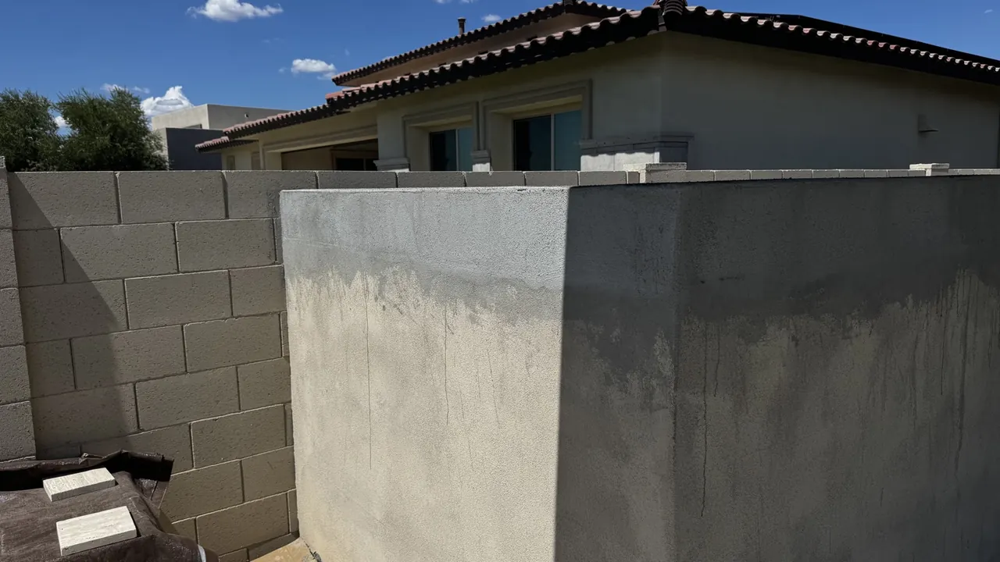
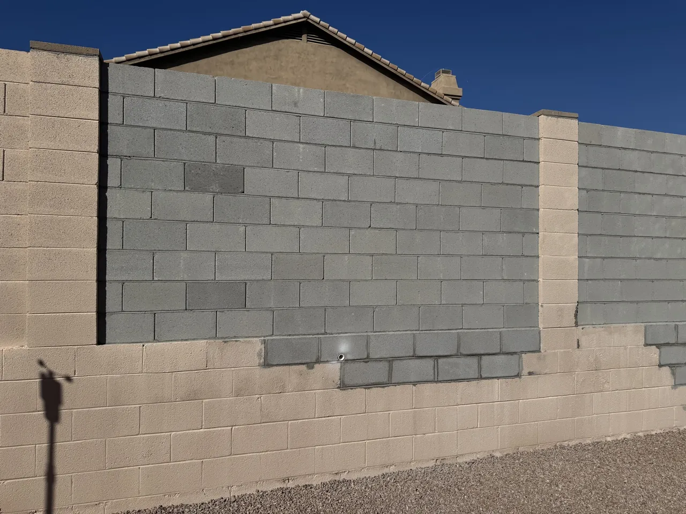
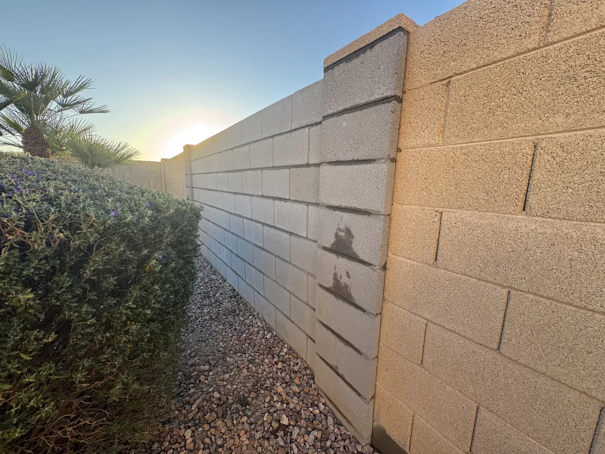
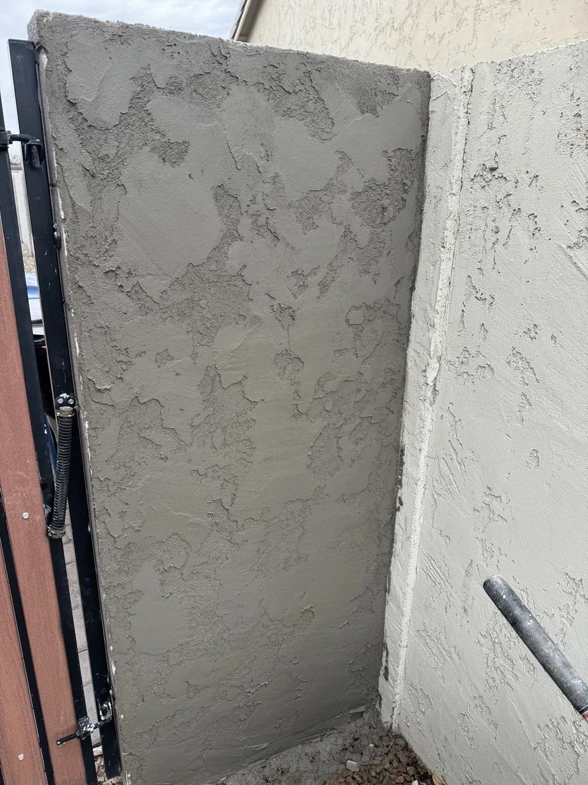
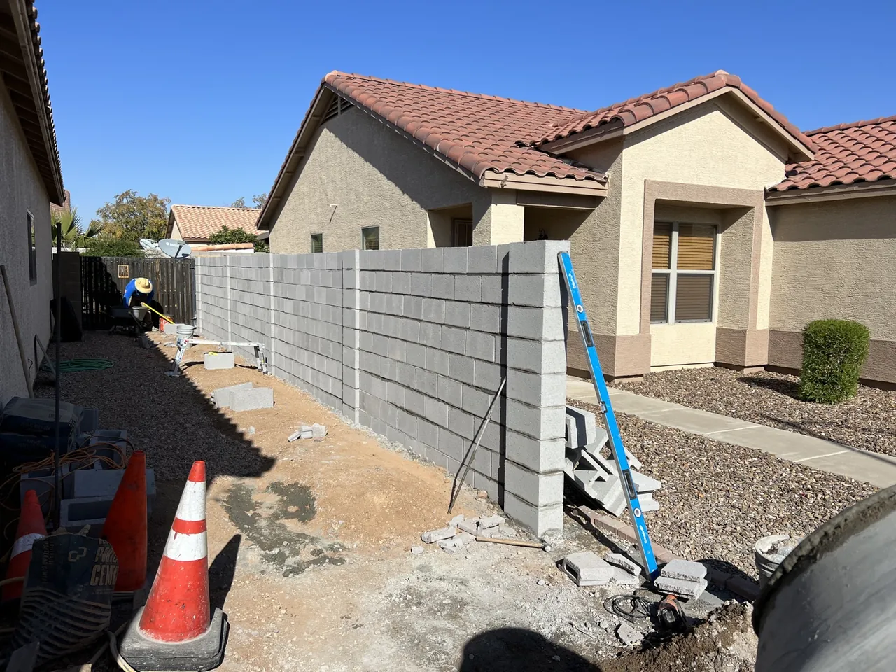
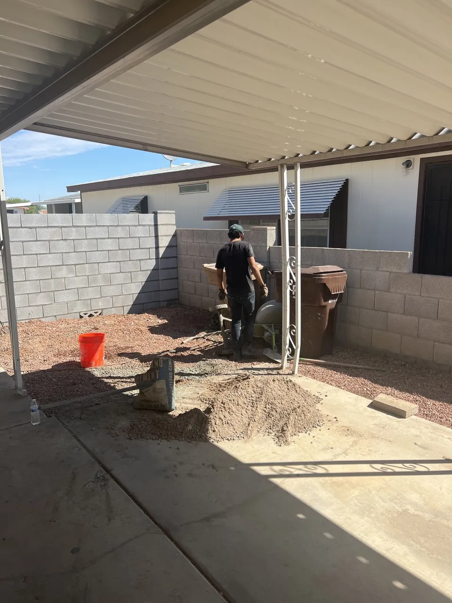

Mesa, AZ
Collapsed Block Wall Repair
A block wall section near a gate had collapsed and required reconstruction.
View project →Actual Desert Dreamco block-wall work across the Phoenix Valley. Full case-study pages include documented before-and-after projects, with additional recent local-work snapshots below.
A block wall section near a gate had collapsed and required reconstruction.
View project →
A localized section of a commercial block wall had been damaged by impact.
View project →
A masonry pilaster had severe cracking and visible failure.
View project →
The upper portion of a long commercial masonry wall required repair and finishing.
View project →
The masonry base supporting a decorative metal fence had a damaged section.
View project →
A section of the masonry base beneath a metal fence was damaged and partially failed.
View project →These are real Desert Dreamco job snapshots. We are using them as local proof instead of creating a separate thin case-study URL for every small project.

Block wall work added to an existing fence line.
Peoria service area →
Recent CMU fence repair work in Cave Creek.
Cave Creek service area →
Recent repair work in the Rancho Santa Fe area.
Avondale service area →
Recent fence repair with stucco finish work.
Chandler service area →
Recent CMU fence repair work during construction.
Surprise service area →
Recent block-fence repair work in Sun City.